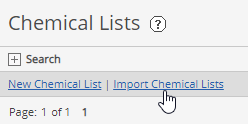
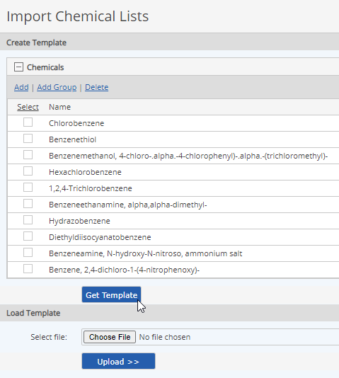

You can export a chemical list to an Excel file for editing. Edited chemical lists may be uploaded to the same system, or to a different system model.
If a chemical list that includes custom chemicals is uploaded to a different system model, the custom chemicals associated with the list will not be copied and will not appear in the list, unless a custom chemical with same name and CAS number exists in the second system.
To export a chemical list to Excel:
Right click the chemical list and choose Export to Excel.
Choose a file name and a location to save the file.
Open the file in Excel and edit it as necessary. When you are ready to upload the file, you can use Import Chemical Lists.
You can create a new chemical list to edit in Excel, by first creating an Excel template to download the chemical list. You may then edit the list in Excel and upload it to the system.
To create a new chemical list template for editing in Excel:
From the Chemical Lists page, select Import Chemical Lists.

Click Get Template.

To import a chemical list from an Excel file:
Click Upload.
The upload validation appears. Any problems with the import file will be noted in the Errors and Warnings. If problems are found, you can return to the upload page after fixing the problems.